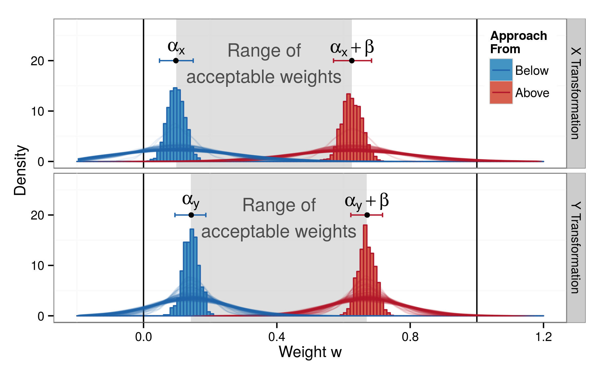
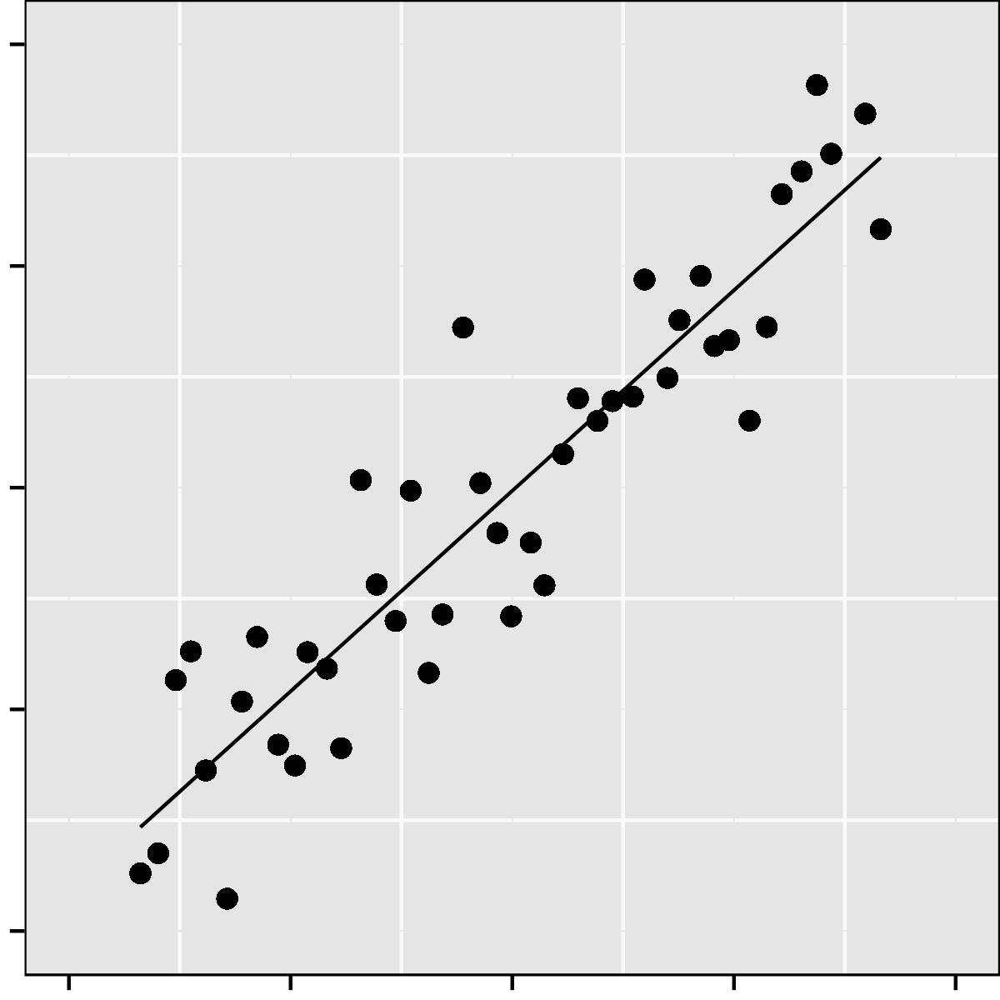
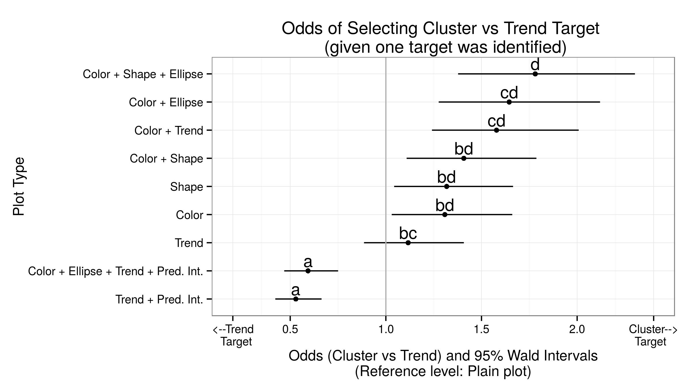
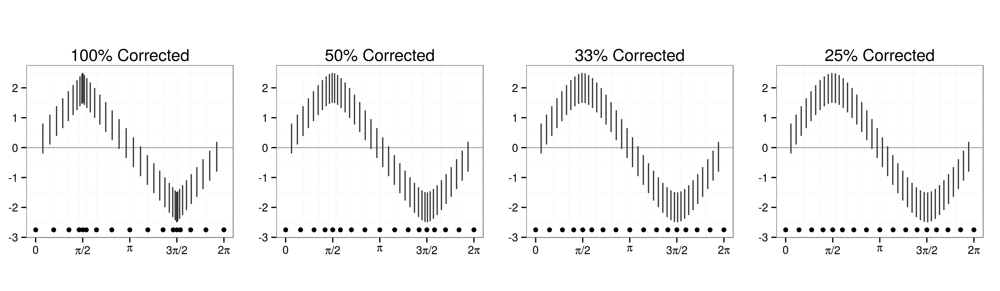

Perception in Statistical Graphics
Susan VanderPlas
April 1, 2015
Purpose
How do we effectively communicate with graphics?
Papers
- Visual Illusions in Statistical Graphics
- Signs of the Sine Illusion: Why We Need to Care
- The Curse of Three Dimensions: Why Your Brain is Lying to You
- Fundamental Skills for Graphical Perception
- Quantifying the Effects of Plot Aesthetics
Visual Illusions in Statistical Graphics

Signs of the Sine Illusion
Forthcoming in JCGS (Accepted July 2014)
Signs of the Sine Illusion
Summary of Results

The Curse of Three Dimensions
Student Paper Award (ASA Stat. Graphics, 2014)
Extended paper for ACM Transactions on Applied Perception
- Identify perceptual basis of the sine illusion: depth perception
- Case Study
The Curse of Three Dimensions
Depth Perception

Signs of the Sine Illusion
Impact
- Increase awareness of the illusion
- Implement two useful corrections
- Quantify correction strength required
- Identify the cause of the illusion
Lineups - Methodology
Lineups - Methodology
|
|
|
Lineups - Methodology
- Hypothesis Test: Decoys created under $H_0$
If data is identifiable, we reject $H_0$ for the data - Suppose for $K$ participants, $k$ identify the data plot.
Visual p-value: $P(X\geq k | H_0)$ - For the previous lineup,
- KS Test p-value: 0.0000
- Lineup p-values for 5 participants, $k$ who identify plot 7:
- Objective test of whether we see structure in the data display
| $k$ | 0 | 1 | 2 | 3 | 4 | 5 |
|---|---|---|---|---|---|---|
| p-value | 1.0000 | 0.2262 | 0.0226 | 0.0012 | 0.0000 | 0.0000 |
Fundamental Skills for Graphical Perception
Submitted to Infovis 2015
What skills are necessary to evaluate lineups?
Fundamental Skills for Graphical Perception
Figure Classification

Measures ability to classify images according to inferred rules
French, J. W., R. B. Ekstrom and L. A. Price. Kit of reference tests for cognitive factors. Educational Testing Service. Princeton, NJ, 1963.
Fundamental Skills for Graphical Perception
Study Setup
|
|
Fundamental Skills for Graphical Perception
Results
|
PC1 shows general aptitude |
Quantifying the Effect of Plot Aesthetics


Intended for submission to JCGS
Quantifying the Effect of Plot Aesthetics
Summary
- 2 models: $M_T$ (trend) and $M_C$ (cluster)
- $M_0$, a mixture model
- Test 10 combinations of plot aesthetics
Lineups: "Which plot is the most different?"
|
Trend: 18, Cluster: 13 |
Participant Responses
|
Lineups: "Which plot is the most different?"
|
Trend: 18, Cluster: 13 |
Participant Responses
Previous plot's responses are shown in grey |
Quantifying the Effect of Plot Aesthetics
Results
| Good for Trends: | Not as good: | ||
|---|---|---|---|
| 1 | 2 | 3 | 4 |
| Trend line + Pred. Int. |
Trend line Plain |
Shape Color + Shape Color |
Color + Ellipse Color + Shape + Ellipse |
Quantifying the Effect of Plot Aesthetics
Results - Trend vs. Cluster
|
 Plot types are significantly different if they do not share a letter |
Color and Shape are not sig. different Color + Shape is not a significant improvement over either aesthetic alone. |
Quantifying the Effect of Plot Aesthetics
Impact
- Aesthetics matter for plot design
- To emphasize linear relationships, use intervals as well as a trend line
- To emphasize clustering, use similarity (color or shape) and/or bounding ellipses
Conclusions
- It's important to consider the visual system when designing statistical plots
- Optical illusions can impact our conclusions from graphics
- Our ability to read statistical plots and identify visually significant results depends on mathematical training and reasoning ability
- Plot aesthetics can be effectively used to highlight important information in data displays
Extra Information
X Transformation
